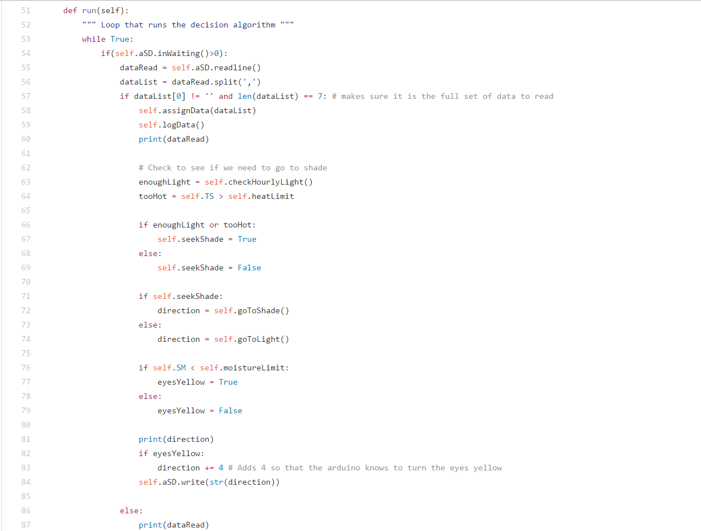

Final Software System
In the end, the software involved reading from multiple sensors and comparing them against the starting conditions of the turtle. Based on different circumstances, the Raspberry Pi then returned the direction the turtle should go, whether continuing forward, turning to the left or right, or staying still for a while. The data was then logged, with the hopes of doing more with it in the future.
The below code snippet shows the main control loop of the turtle. If the turtle had not received too much light (which could burn the plant), and the inside of the shell was not too hot, it tried to stay in the light. For this, we checked the value of the light sensors. If there was shade in front, we tried to turn. If there was not, we checked the IR sensors. If something was in front, we tried turning. If something was to the right, we turned left. We also checked the soil moisture level, and if that level was too low, we instructed the eyes to change color to alert the turtle owner that they needed to water their plant.
The below code snippet shows the main control loop of the turtle. If the turtle had not received too much light (which could burn the plant), and the inside of the shell was not too hot, it tried to stay in the light. For this, we checked the value of the light sensors. If there was shade in front, we tried to turn. If there was not, we checked the IR sensors. If something was in front, we tried turning. If something was to the right, we turned left. We also checked the soil moisture level, and if that level was too low, we instructed the eyes to change color to alert the turtle owner that they needed to water their plant.
The motion of the legs was controlled by the arduino. A couple simple switches on the bottom of the feet let us know whether a leg was down, so that the steps would remain asynchronous.